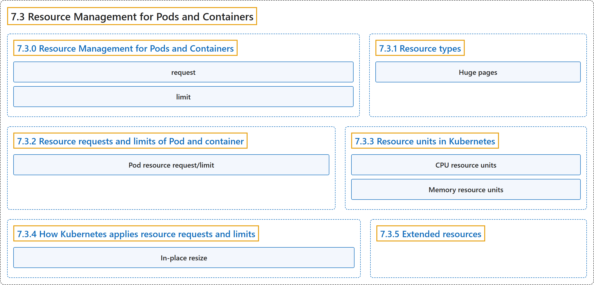

7.3 Resource Management for Pods and Containers
Classification

Glossary
| Term | Definition | 中文翻译 | Source |
|---|---|---|---|
| 7.3 Resource Management for Pods and Containers Pod 和容器的资源管理 |
(context) "When you specify a Pod, you can optionally specify how much of each resource a container needs." | （语境）当你定义 Pod 时，可以选择指定一个容器需要多少各类资源。 | The Kubernetes Authors, n.d., "Resource Management for Pods and Containers", para. 1 |
| 7.3.0 Resource Management for Pods and Containers Pod 和容器的资源管理 |
(No definition) | （无定义） | The Kubernetes Authors, n.d., "Resource Management for Pods and Containers" |
| request 请求 |
(context) "When you specify the resource request for containers in a Pod, the kube-scheduler uses this information to decide which node to place the Pod on." | （语境）当你为 Pod 中的容器指定资源请求时，kube-scheduler 用这一信息来决定把 Pod 放到哪个节点上。 | The Kubernetes Authors, n.d., "Resource Management for Pods and Containers", para. 2 |
| limit 限制 |
(context) "When you specify a resource limit for a container, the kubelet enforces those limits" | （语境）当你为容器指定资源限制时，kubelet 会强制执行这些限制 | The Kubernetes Authors, n.d., "Resource Management for Pods and Containers", para. 2 |
| 7.3.1 Resource types 资源类型 |
"A resource type has a base unit and can be requested, limited, or both." | 资源类型有一个基本单位，可以被请求、被限制，或两者兼有。 | The Kubernetes Authors, n.d., "Resource types", para. 1 |
| Huge pages 巨页 |
(context) "For Linux workloads, you can specify huge page resources." | （语境）对于 Linux 工作负载，你可以指定巨页资源。 | The Kubernetes Authors, n.d., "Huge pages", para. 1 |
| 7.3.2 Resource requests and limits of Pod and container Pod 和容器的资源请求与限制 |
(No definition) | （无定义） | The Kubernetes Authors, n.d., "Resource requests and limits of Pod and container" |
| Pod resource request/limit Pod 资源请求/限制 |
"For a particular resource, a Pod resource request/limit is the sum of the resource requests/limits of that type for each container in the Pod." | 对某种资源而言，Pod 资源请求/限制是该类资源请求/限制的总和，遍及 Pod 中的每个容器。 | The Kubernetes Authors, n.d., "Resource requests and limits of Pod and container", para. 10 |
| 7.3.3 Resource units in Kubernetes Kubernetes 中的资源单位 |
(No definition) | （无定义） | The Kubernetes Authors, n.d., "Resource units in Kubernetes" |
| CPU resource units CPU 资源单位 |
"Limits and requests for CPU resources are measured in cpu units." | CPU 资源的限制和请求以 cpu 单位度量。 | The Kubernetes Authors, n.d., "CPU resource units", para. 1 |
| Memory resource units 内存资源单位 |
"Limits and requests for memory are measured in bytes." |
memory 的限制和请求以字节度量。 |
The Kubernetes Authors, n.d., "Memory resource units", para. 1 |
| 7.3.4 How Kubernetes applies resource requests and limits Kubernetes 如何应用资源请求和限制 |
(No definition) | （无定义） | The Kubernetes Authors, n.d., "How Kubernetes applies resource requests and limits" |
| In-place resize 原地调整 |
(context) "This is called in-place Pod vertical scaling or in-place Pod resize." | （语境）这称为原地 Pod 垂直扩缩或原地 Pod 调整。 | The Kubernetes Authors, n.d., "In-place resize", para. 2 |
| 7.3.5 Extended resources 扩展资源 |
"Extended resources are fully-qualified resource names outside the kubernetes.io domain." |
扩展资源是完全限定的资源名称，位于 kubernetes.io 域之外。 |
The Kubernetes Authors, n.d., "Extended resources", para. 1 |
References
The Kubernetes Authors. (n.d.). Resource Management for Pods and Containers. Kubernetes Documentation. Retrieved October 31, 2026, from https://kubernetes.io/docs/concepts/configuration/manage-resources-containers/